2024 Aug 09
The plan from last week was to do the following:
The GMM Prior section covers 1, the Recap: Encorporating a Learning-Based Approach section kind of covers 2, and the Shape-space Kernel subsection covers 3.
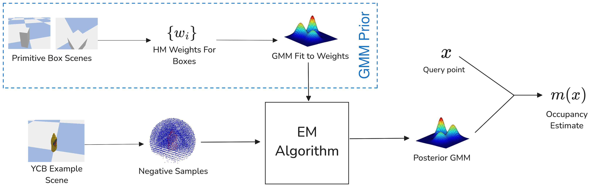
At a High Level: The basic idea (for this week’s simple example) is that a GMM prior will be computed offline from some primitive reconstructions of boxes, then incorporated into a similar EM algorithm as original BHM paper [1]. Then, the idea is to test on some simple scenes of a couple YCB objects.
BHM Updates with GMM Prior: The original BHM update does 2 things:
In order to extend to GMM, we can keep step 1 the same, but step 2 must be updated. We then have a problem of calculating: \hat P(w | D) \propto Q(D| w; \xi) P(w) Where P(w) is a GMM and Q(D|w;\xi) is a Gaussian. Because a GMM is just a mixture of Gaussians, we can express: P(w) = \sum_{i=1}^k \beta_i P_i(w) For each Gaussian component P_i with weight \beta_i. Then, we can split up the computation of \hat P (w | D), to consider each component separately. Then, we would only need to figure out what the weights would need to be updated to. From Sec. 8.1.8 of [2], we know that two normal distributions times together have a combined integral of \int_{\mathbb R^n} p_1(x)p_2(x)dx = \text{det}\left(2\pi(\Sigma_1 +\Sigma_2)\right) ^{-1/2} \text{exp} \left(-\frac{1}{2} (\mu_1 - \mu_2)^\top \left(\Sigma_1 +\Sigma_2\right)^{-1} (\mu_1 - \mu_2) \right) Thus, if we let the above be denoted C_i for update i, we would have the following weight updates during step 2: \beta_i \gets \beta_i \cdot C_i And then normalize all \beta_i such that \sum_i \beta_i = 1. We would do the same \hat \Sigma, \hat \mu updates as described by [3].
Question: is this math sound?
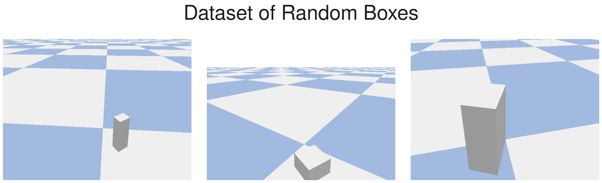
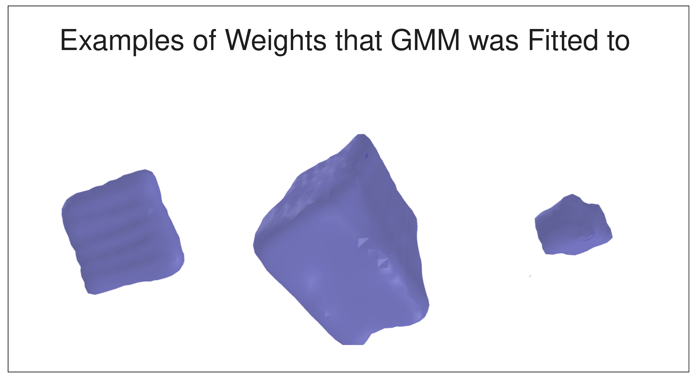
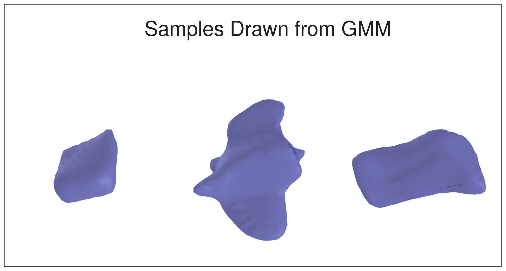
Scene 1: Mustard Bottle
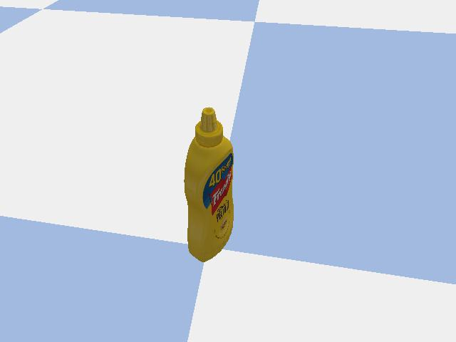
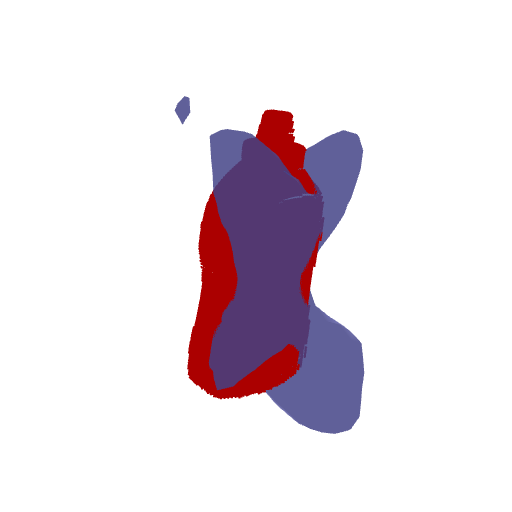
Scene 2: Can
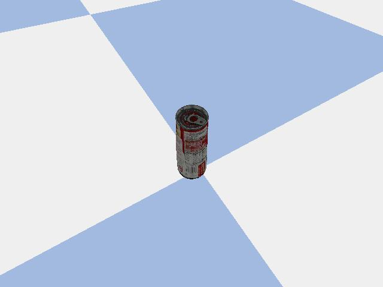
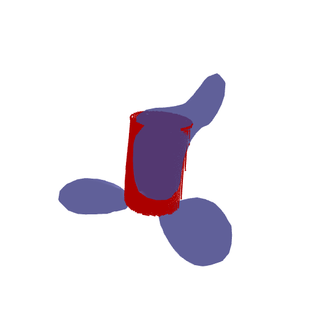
Scene 3: Banana
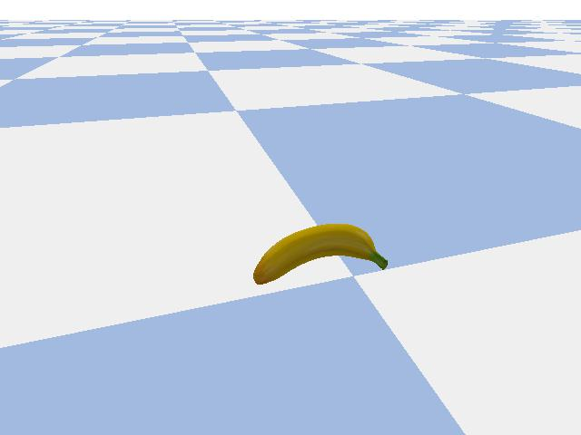
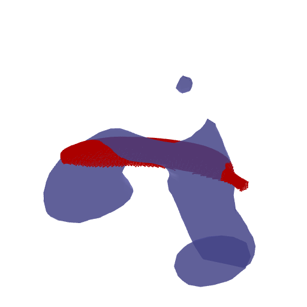
The reconstructions weren’t great. I even tried with a box that was in the training data and it didn’t really work. I also noticed two things that may point to something weird going on:
As such, it might take some brainstorming about what to do about this. It could be a totally fixable problem, or something ingrained in the problem (i.e. the EM algorithm just isn’t good enough). If we wanted to continue this route and we get things working, then the obvious ways to extend this would be:
Question: what do we think I should do about this?
Question: do we think there is a better approach to this other than what I have right now?
The general HM approach uses a prediction of the form \sigma (w^\top \phi(x)) where \phi is a transform from hinge points and w is modeled probabilistically. We discussed a few ways to incorporate learning into this method. Some of them were:
Other things to note:
Question: If we really wanted to go the learning approach, why wouldn’t we make the whole thing learning-based? We could still do optimization-based reconstruction; but have every part be learned?
There are some approaches to probabilistic reconstruction with a focus on diversity that I have seen, here are a two:
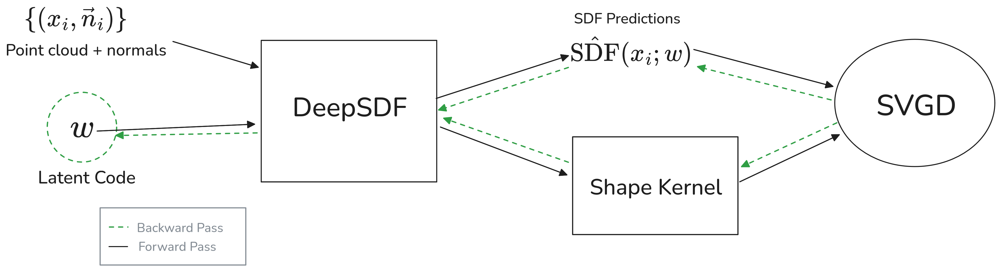
Last time I had an idea of converting DeepSDF [6] method into a probabilistic one. The main idea is that you could do the optimization with SVGD that uses a crafted “shape-space kernel”.
Interesting: there exists a method for using DeepSDF-like optimization but also capturing uncertainty (specifically for combining multiple frames with pose estimation) [7].
Question: I think this approach could be cool, but what do you guys think?
We could consider constructing a kernel in a variety of ways. RBF kernels, which are most commonly used in SVGD [8], rely on euclidean distance as so: k(x, y) = \text{exp}\left(-\gamma\| x - y \|^2\right) I wonder if there is a way that you could replace the euclidean distance with a different kind of distance in order to have a better kernel. For example, one could consider a kernel between two “shapes” A, B: k(A, B) = \text{exp}\left( - \gamma d(A, B) \right) Our kernel from latent vectors x, y could be created from our shape kernel: k(x, y) = k(S(x), S(y)), where S maps a latent vector to a “shape”. If this shape is an occupancy probability map we could consider the following distance: d(m_1, m_2) = \int_\mathbb w(x) |m_1(x) - m_2(x)| dx, where w(x) is a weight in order to ensure our integral is bounded. This, however, might not be an amazing kernel for a couple reasons, so perhaps we could look at:
Chamfer Distance: consider a kernel where d is the Chamfer distance between points on the isosurface of the two shapes. Then we could construct a kernel with this. Hausdorff could also be used. However, these also have their problems:
Another Idea: we could also go the metric learning route and use a learning based kernel. We could have some sort of function that takes either the latent vector or some other representation and predicts a similarity or distance. I think this could be promising, but would take some thought.
Problems: In order for SVGD to work, the kernel needs to satisfy a couple properties:
Unfortunately, I think there are a few things that violate these assumptions:
Question: Is there some math I should look up / read in order to explore this more?
Note: just putting this here; I haven’t had time to read it really, but I found a paper that talks about extending SVGD to high-dimensional tasks that compares SVGD to GAN on CIFAR10 and MNIST. The paper is [9]
Looking forward I would like to work on: